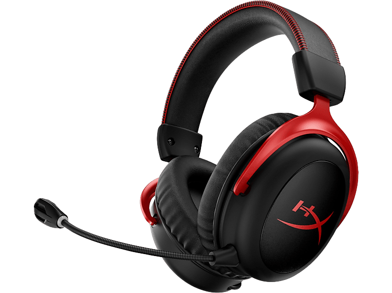
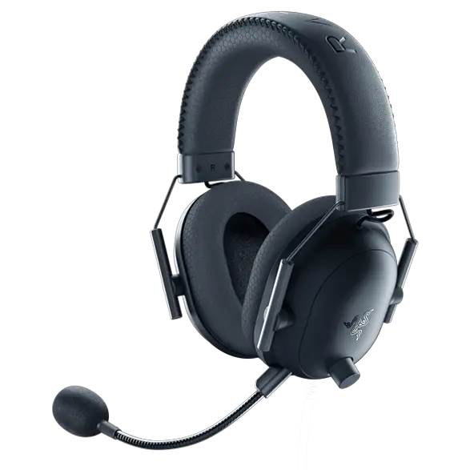

Models pensats per a confort i qualitat de so: esports, streaming i treball creatiu amb àudio precís.

HyperX Cloud II
Cascos amb espumes de memòria, micròfon extraïble i perfil sonor pensat per gaming i comunicació clara.
Excel·lent per a sessions llargues gràcies al confort i materials lleugers.
- So: 7.1 Virtual Surround
- Drivers: 53mm
- Micròfon: Extraïble amb cancel·lació de soroll
- Connexió: 3.5mm + USB (opcional)
Més

Logitech G Pro X
Elegit per esports professionals, ofereix Blue VO!CE per processing de veu, materials lleugers i aqüstica refinada.
- Drivers: Pro-G 50mm
- Micròfon: Blue VO!CE amb presets
- Connexió: USB / 3.5mm
- Construcció: Disseny per esports
Més

Razer BlackShark V2
Dissenyat per esports amb THX Spatial Audio i drivers Triforce, ofereix posicionament sonor i micròfon de qualitat.
Bona opció per esports competitius i streaming.
- So: THX Spatial Audio
- Drivers: Triforce 50mm
- Micròfon: Cardioide amb cancel·lació
- Connexió: 3.5mm / USB DAC
Més